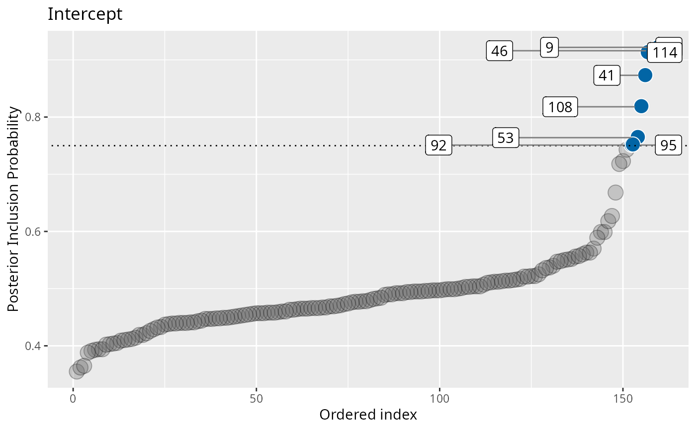
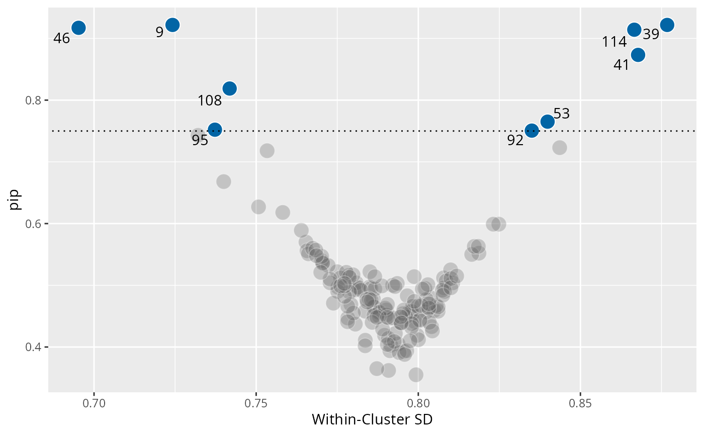

Main function to set up and run parallel MCMC using nimble and future. ivd computes a mixed effects location and scale model with Spike and Slab regularization on the scale random effects.
Source: R/ivd.R
ivd.RdMain function to set up and run parallel MCMC using nimble and future.
ivd computes a mixed effects location and scale model with Spike and Slab regularization
on the scale random effects.
Usage
ivd(
location_formula,
scale_formula,
data,
niter,
nburnin = NULL,
WAIC = TRUE,
workers = 4,
n_eff = "local",
ss_prior_p = 0.5,
...
)Arguments
- location_formula
A formula for the location model
- scale_formula
A formula for the scale model
- data
Data frame in long format for analysis
- niter
Total number of MCMC iterations after burnin
- nburnin
Number of burnin iterations, defaults to the same as niter
- WAIC
Compute WAIC, defaults to 'TRUE'
- workers
Number of parallel R processes – doubles as 'chains' argument
- n_eff
Use stan::monitor function or built local: 'stan' vs. 'local'
- ss_prior_p
Prior inclusion probability. Defaults to '.5'.
- ...
Currently not used
Value
An object of class "ivd" (and "list"), which contains the
results from fitting a mixed-effects location-scale model with Spike-and-Slab
regularization using NIMBLE and parallel MCMC sampling.
The returned object is a named list with the following components:
samples: Anmcmc.listobject containing posterior samples for all monitored parameters across all chains.logLik_array: A 3D array of pointwise log-likelihood values with dimensionsiterations × chains × N.rhat_values: Vector of split-\(\hat{R}\) convergence diagnostics (Vehtari et al., 2021).n_eff: Vector of effective sample sizes, either computed internally ("local") or viarstan::monitor()("stan").nimble_constants: List of model constants used by the underlying NIMBLE model (e.g., number of groups, number of parameters).X_location_names,Z_location_names: Names of fixed and random effects in the location submodel.X_scale,Z_scale: Matrices used for the scale submodel’s fixed and random effects.Y: Data frame with the response vector and group identifiers.workers: Number of parallel chains used....: Additional elements created internally and used for downstream S3 methods (print(),summary(), etc.).
The object is designed to support S3 methods for printing, summarizing,
and extracting results from the ivd model.
Examples
# \donttest{
out <- ivd(location_formula = math_proficiency ~ 1 + (1 | school_id),
scale_formula = ~ 1 + (1 | school_id),
data = saeb,
niter = 1000,
nburnin = 2000,
WAIC = TRUE,
workers = 1) ## Workers = 1 for CRAN server - not ideal for individual use
#> nimble version 1.3.0 is loaded.
#> For more information on NIMBLE and a User Manual,
#> please visit https://R-nimble.org.
#>
#> Note for advanced users who have written their own MCMC samplers:
#> As of version 0.13.0, NIMBLE's protocol for handling posterior
#> predictive nodes has changed in a way that could affect user-defined
#> samplers in some situations. Please see Section 15.5.1 of the User Manual.
#> ===== Monitors =====
#> thin = 1: Ustar, beta, sigma_rand, ss, z, zeta
#> ===== Samplers =====
#> conjugate sampler (1)
#> - beta[] (1 element)
#> binary sampler (320)
#> - ss[] (320 elements)
#> RW_lkj_corr_cholesky sampler (1)
#> - Ustar[1:2, 1:2]
#> RW sampler (323)
#> - z[] (320 elements)
#> - zeta[] (1 element)
#> - sigma_rand[] (2 elements)
#> thin = 1: R, beta, mu, sigma_rand, ss, tau, u, zeta
#> |-------------|-------------|-------------|-------------|
#> |-------------------------------------------------------|
#> [Warning] There are 7 individual pWAIC values that are greater than 0.4. This may indicate that the WAIC estimate is unstable (Vehtari et al., 2017), at least in cases without grouping of data nodes or multivariate data nodes.
#> Defining model
#> Building model
#> Setting data and initial values
#> [Note] 'X' is provided in 'data' but is not a variable in the model and is being ignored.
#> [Note] 'X_scale' is provided in 'data' but is not a variable in the model and is being ignored.
#> [Note] 'Z_scale' is provided in 'data' but is not a variable in the model and is being ignored.
#> Running calculate on model
#> [Note] Any error reports that follow may simply reflect missing values in model variables.
#> Checking model sizes and dimensions
#> [Note] This model is not fully initialized. This is not an error.
#> To see which variables are not initialized, use model$initializeInfo().
#> For more information on model initialization, see help(modelInitialization).
#> Compiling
#> [Note] This may take a minute.
#> [Note] Use 'showCompilerOutput = TRUE' to see C++ compilation details.
#> Compiling
#> [Note] This may take a minute.
#> [Note] Use 'showCompilerOutput = TRUE' to see C++ compilation details.
#> [Note] 'X' is provided in 'data' but is not a variable in the model and is being ignored.
#> [Note] 'X_scale' is provided in 'data' but is not a variable in the model and is being ignored.
#> [Note] 'Z_scale' is provided in 'data' but is not a variable in the model and is being ignored.
#> running chain 1...
#> Warning: Some R-hat values are greater than 1.10 -- increase warmup and/or sampling iterations.
## Posterior inclusion probability plot (PIP)
plot(out, type = "pip")

## PIP vs. Within-cluster SD
plot(out, type = "funnel")

## Diagnostic plots based on coda plots:
library(coda)
codaplot(out, parameters = "Intc")
codaplot(out, parameters = "R[scl_Intc, Intc]")
# }